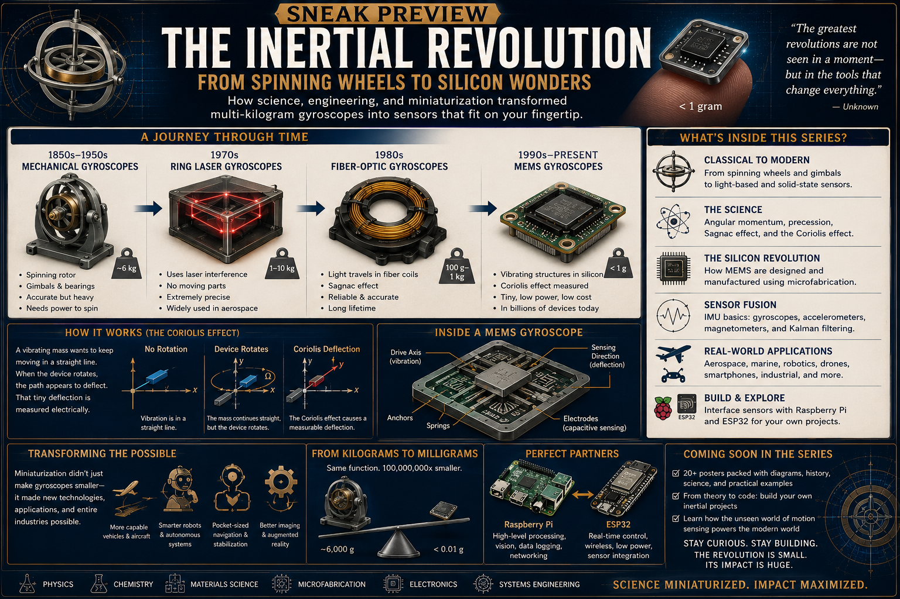

Mechanical gyroscopes
Early systems used a visibly spinning rotor mounted in gimbals. The rotor resisted changes in orientation because of angular momentum. They were accurate, but large, heavy, and mechanically complex.
Electronics · Sensors · Raspberry Pi
A lesson for Klins on how acceleration, tilt, vibration, and motion become electrical data— and how those measurements can become useful projects on the Raspberry Pi bench.

The poster shows a long process of shrinking the same physical ideas.
Early systems used a visibly spinning rotor mounted in gimbals. The rotor resisted changes in orientation because of angular momentum. They were accurate, but large, heavy, and mechanically complex.
Ring-laser and fiber-optic gyroscopes replaced moving rotors with light. Rotation changes the travel time or phase of light moving around a closed path.
Modern inertial sensors use microscopic vibrating masses and springs etched into silicon. They perform the same broad job in a package small enough for phones, drones, robots, and embedded systems.
These sensors are related, but they do not measure the same thing.
Measures acceleration along one or more axes. At rest, it also detects gravity, so it can estimate which way is down and whether a board is tilted.
Measures rotational speed around an axis. It tells you how quickly the device is turning, but drift accumulates if software tries to calculate orientation from it for a long time.
An inertial measurement unit usually combines a three-axis accelerometer and a three-axis gyroscope. Some units also include a magnetometer for compass direction.
Think of the accelerometer as a tiny weighted object suspended on springs inside the chip. When the board moves, the chip moves first and the tiny mass lags behind. The sensor measures that difference. The physical event becomes an electrical signal, then a digital value, then a line of code, a graph, an alert, or a control decision.
The bench already contains most of the pieces needed for a useful inertial-sensing lab.
These projects isolate one idea at a time before combining the sensor with larger systems.
Print the three acceleration axes once every fraction of a second.
Convert gravity readings into pitch and roll angles.
Detect a sudden spike in acceleration when the bench or enclosure is tapped.
Attach the sensor to a fan, motor, appliance, or moving surface and record vibration over time.
Save a short burst of high-speed sensor data whenever movement begins.
Use board position as an input to the relay board.
Once the component is understood, it can become one sensor inside a broader system.
Record when the electronics bench is bumped, moved, or shaken. Combine the event with a timestamp, camera image, or notification.
Mount an IMU on the bicycle to record road vibration, braking, sharp turns, stops, and rough sections of the route.
Attach a sensor to a hand tool or test fixture and classify patterns such as idle, carried, active, dropped, or vibrating.
Compare present vibration against a learned baseline. A change in vibration can indicate looseness, imbalance, or wear.
Use hand motion or board orientation to control LEDs, menus, sounds, or commands without buttons.
Use an IMU to measure unwanted motion and explore how a control system might command a servo to compensate.
Each stage adds one new layer without hiding the physical behavior.
Connect the sensor and print x, y, and z values. Move it by hand and observe the numbers.
Measure offsets while the board is still and subtract them from later readings.
Plot one axis over time so vibration and movement become visible patterns rather than changing numbers.
Use a moving average or low-pass filter to separate useful motion from tiny fluctuations.
Define what counts as a tilt, impact, sustained vibration, or movement event.
Trigger a relay, save a record, update a web page, or send a notification.
The inertial revolution is not only that a six-kilogram instrument became a chip smaller than a fingernail. The deeper change is that motion itself became ordinary data. Once motion is data, it can be stored, graphed, compared, filtered, transmitted, and used as feedback. That is where the accelerometer joins the rest of our bench: it becomes another way for the physical world to enter software.